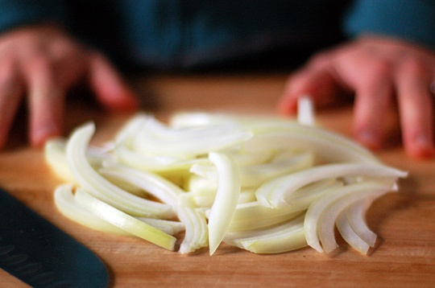
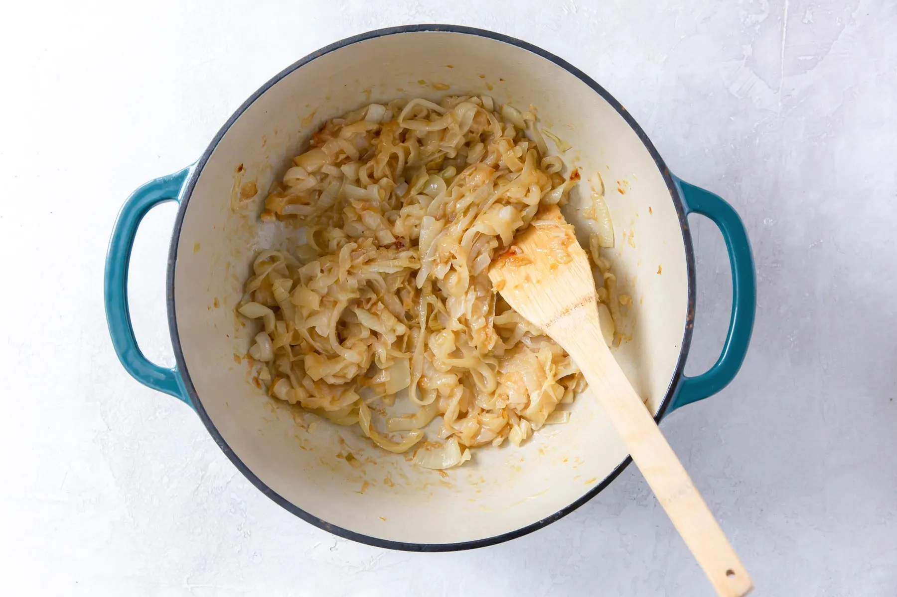
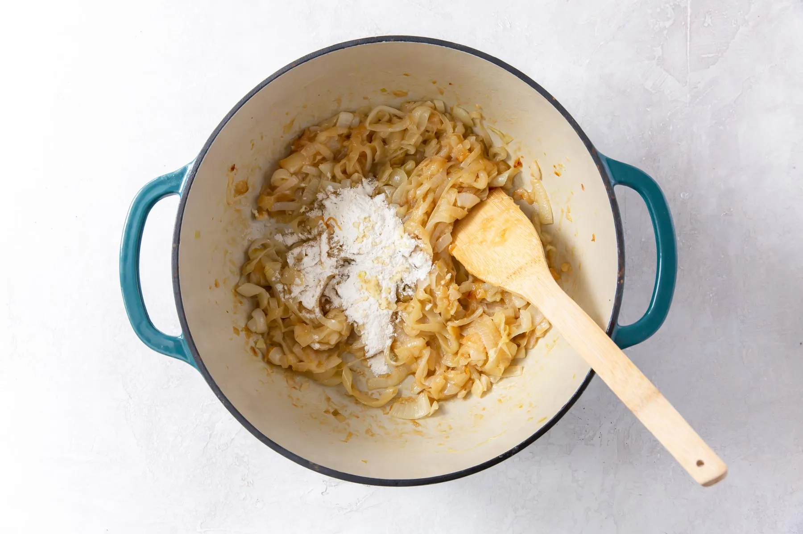
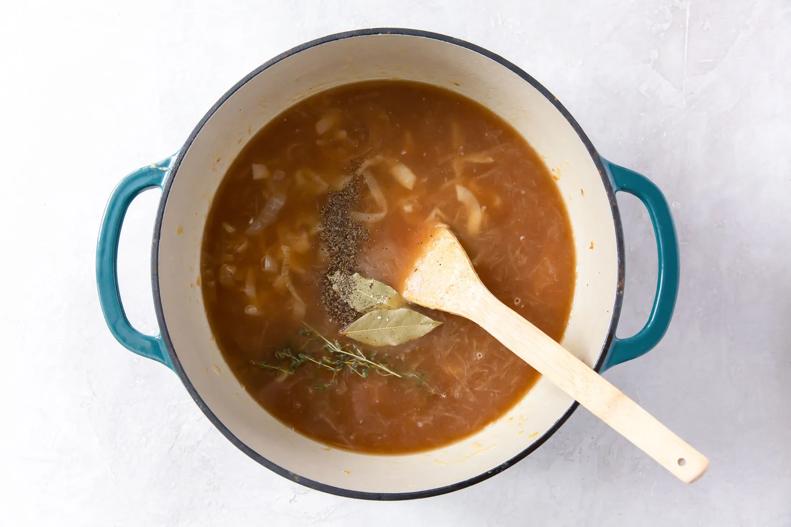
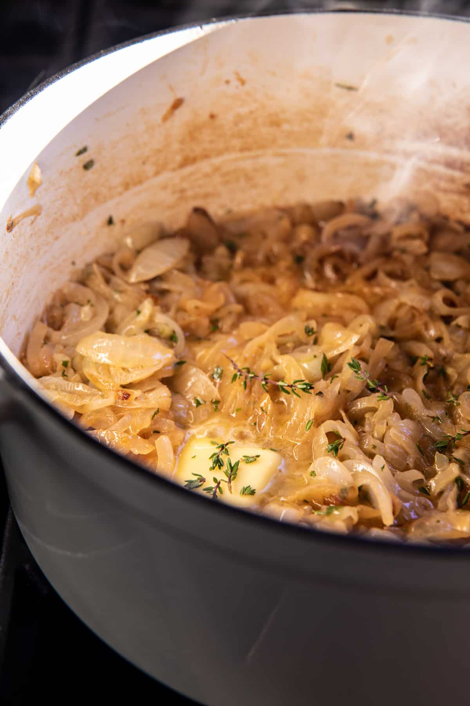
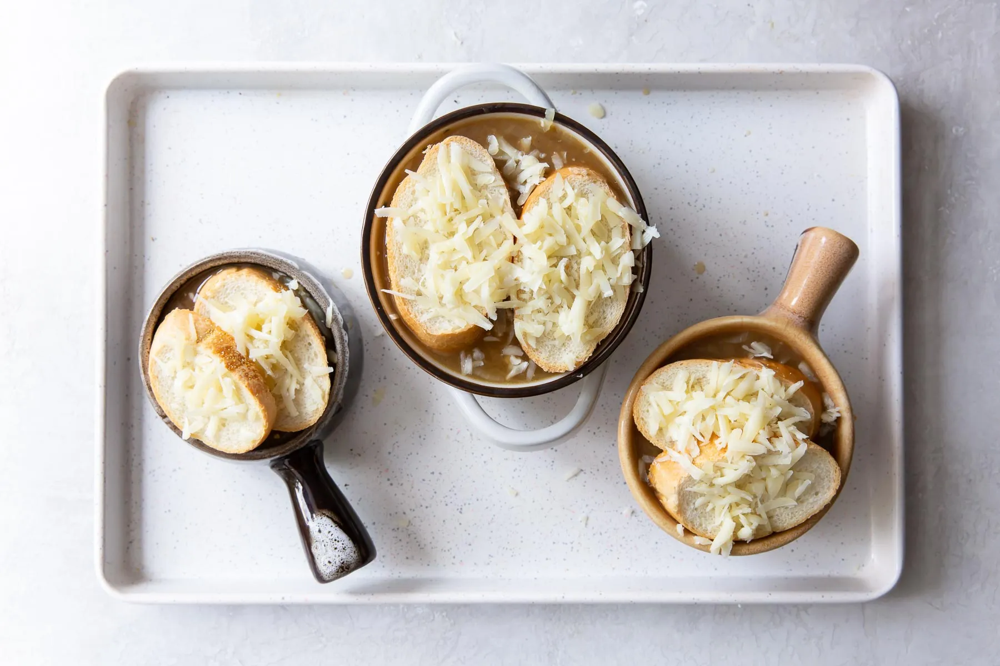
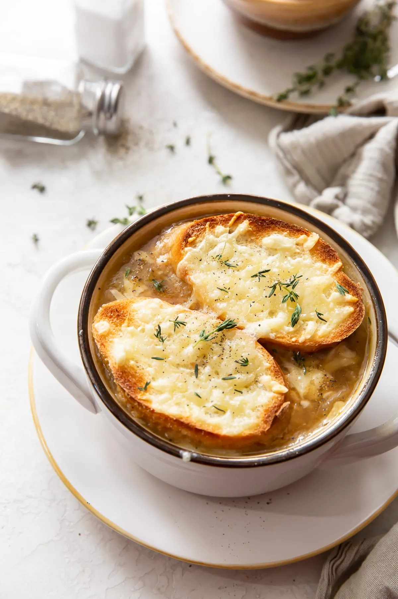

Ingredientes
¿Estas preparada para iniciar tu receta de Sopa de cebolla?
Marca todos los ingredientes para asegurarte de que los tienes.
Ya tienes todos los ingredientes ¡Empieza a cocinar!
Proceso:
1. Pela y corta las cebollas en rodajas finas.
2. Rehogarlas con la mantequilla, sal y pimienta a fuego lento hasta que estén transparentes sin dorarse.
3. Añadir la harina sin dejar de remover.
4. Ponerlo en una cazuela con el caldo, el tomillo y el laurel.
5. Dejar cocer a fuego lento durante unos 15 minutos.
6. Poner las rebanadas de pan encima, espolvorear el queso y gratinar al horno.
7. Es momento de disfrutar de tu SOPA DE CEBOLLA
